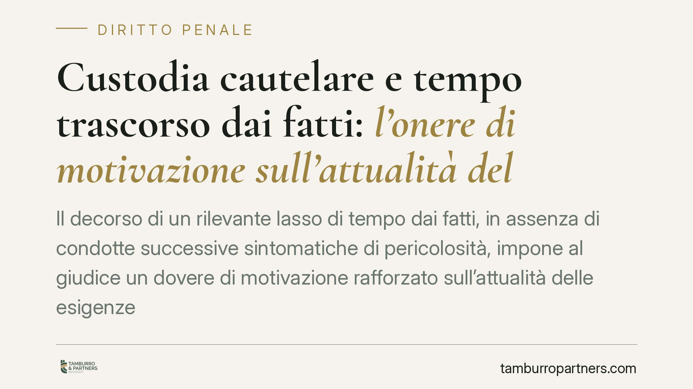

Custodia cautelare e tempo trascorso dai fatti: l'onere di motivazione sull'attualità del pericolo
Il decorso di un rilevante lasso di tempo dai fatti, in assenza di condotte successive sintomatiche di pericolosità, impone al giudice un dovere di motivazione rafforzato sull'attualità delle esigenze cautelari. Un principio garantista che incide direttamente sulla tenuta delle ordinanze restrittive e sulle strategie difensive, riportando al centro la libertà personale come regola.

Il principio in sintesi
La libertà personale è la regola; la custodia cautelare resta l'eccezione. Su questo asse si colloca un orientamento consolidato della giurisprudenza di legittimità: quando tra i fatti contestati e la decisione sulla misura è trascorso un tempo significativo, e in quell'intervallo l'indagato non ha tenuto condotte nuove indicative di pericolosità, il giudice non può limitarsi a richiamare la gravità astratta del reato. Deve motivare in modo specifico perché il pericolo sia ancora attuale.
*Nota redazionale: al momento della pubblicazione non siamo in grado di confermare gli estremi esatti (numero, anno e sezione) della pronuncia segnalata dalla fonte. Il presente contributo illustra quindi il principio di diritto, consolidato in sede di legittimità, senza indicizzare una sentenza i cui riferimenti non risultano verificabili.*
Inquadramento normativo
Il cuore della questione sta nel rapporto tra due norme del codice di procedura penale.
L'art. 274 c.p.p. elenca le esigenze cautelari — pericolo di inquinamento probatorio, rischio di fuga, pericolo di reiterazione del reato — richiedendo che il periculum sia concreto e attuale. Non basta un rischio teorico o ancorato alla sola natura del fatto: deve trattarsi di un pericolo verificabile al momento della decisione.
L'art. 275, comma 3, c.p.p. introduce poi un regime presuntivo per determinati reati. È essenziale precisare che tale presunzione non è uniforme. Per un ristretto nucleo di fattispecie di particolare allarme (si pensi all'associazione di tipo mafioso ex art. 416-bis c.p.) opera una presunzione tendenzialmente più stringente quanto alla sussistenza delle esigenze e alla scelta della misura; per la generalità degli altri reati contemplati dalla norma, invece, la presunzione è relativa: può essere superata dalla prova che le esigenze cautelari non ricorrono o possono essere soddisfatte con misure meno afflittive.
Il punto decisivo è che la presunzione relativa non è un automatismo. Il giudice conserva il dovere di verificare se, nel caso concreto, il pericolo persista. E qui entra in gioco il fattore tempo.
Perché il tempo pesa
Un intervallo ampio tra i fatti e la misura, non accompagnato da ulteriori condotte sintomatiche, erode la forza dimostrativa della presunzione. Il trascorrere del tempo "neutro" — senza recidive, violazioni o segnali di persistente pericolosità — è un elemento che il giudice deve valutare e di cui deve dare conto. In assenza di una motivazione espressa sull'attualità, l'ordinanza presenta un vizio censurabile.
Non si tratta di escludere la cautela, ma di esigere che chi limita la libertà spieghi, qui e ora, perché la restrizione sia ancora necessaria.
Implicazioni pratiche
Per chi è destinatario di una misura cautelare, o lo è un proprio familiare, il principio ha ricadute concrete.
La difesa può valorizzare il tempo trascorso come argomento autonomo, distinto dalla contestazione del merito. Un'ordinanza che fonda la restrizione sulla sola gravità del titolo di reato, trascurando l'attualità del pericolo a distanza di tempo, è un provvedimento tecnicamente aggredibile.
In presenza di una motivazione carente su questo punto, può rilevare la via del riesame o del ricorso per cassazione, a seconda della fase processuale e dei termini applicabili.
Cosa fare in concreto
- Verificare la tempistica. Ricostruire con precisione la distanza tra la data dei fatti contestati e la data dell'ordinanza o dell'ultima valutazione sulla misura.
- Documentare l'assenza di nuove condotte. Raccogliere elementi che attestino l'assenza, nell'intervallo, di comportamenti sintomatici di pericolosità (nessuna recidiva, nessuna violazione, stabilità lavorativa o familiare).
- Esaminare la motivazione dell'ordinanza. Controllare se il giudice abbia argomentato in modo specifico sull'attualità del pericolo o si sia limitato a formule generiche e alla gravità astratta del reato.
- Individuare la natura della presunzione. Verificare se il reato contestato rientri tra le fattispecie a presunzione più stringente o tra quelle a presunzione relativa, perché cambia il perimetro dell'onere argomentativo.
- Valutare i termini di impugnazione. Le finestre temporali per riesame e ricorso sono rigide: la ricognizione va fatta senza ritardi.
Il taglio garantista
Il messaggio di fondo resta quello costituzionale: la libertà personale è la regola, la cautela l'eccezione. Pretendere che il pericolo sia attuale, e non soltanto storicamente plausibile, significa riportare la misura restrittiva alla sua funzione autentica. Il tempo che passa, in questo quadro, non è un dettaglio: è un elemento di giudizio.
---
Contributo informativo a cura di Tamburro & Partners Avvocati. Non costituisce parere legale.
Ogni condominio ha una storia a sé.
Se gestisci un'amministrazione e vuoi un confronto su una specifica questione condominiale, scrivi allo studio. Ti rispondiamo entro un giorno lavorativo.